Obiettivi
Ogni slot ha i suoi obiettivi, e ognuno ha la sua medaglia: di ferro finché manca, d'oro quando lo raggiungi. Quando ne raggiungi uno compare un riquadro in alto con la medaglia; dalla pausa (Esc → Obiettivi) vedi l'elenco e a che punto sei. Quelli "in una discesa" ripartono da zero a ogni discesa. Gli obiettivi segreti restano "???" finché non scopri il segreto. Alcuni mettono un ricordo nuovo sulla lavagnetta delle promesse (vedi Ricordi).
| Obiettivo | Cosa fare | In una discesa | |
|---|---|---|---|
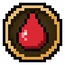 | Primo sangue | Uccidi il tuo primo nemico. | |
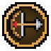 | Cacciatrice | Uccidi 100 nemici. | |
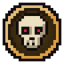 | Sterminatrice | Uccidi 500 nemici. | |
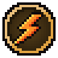 | Furia | Uccidi 50 nemici in una sola discesa. | sì |
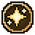 | Luccichio | Prendi il tuo primo dono. | |
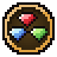 | Collezionista | Prendi 10 doni in una sola discesa. | sì |
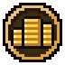 | Tesoriera | Prendi 100 doni. | |
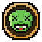 | Ammazzagiganti | Sconfiggi un guardiano. | |
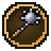 | Flagello dei guardiani | Sconfiggi 3 guardiani in una sola discesa. | sì |
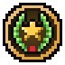 | Leggenda | Sconfiggi 25 guardiani. | |
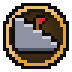 | A metà strada | Scendi 3 piani in una sola discesa. | sì |
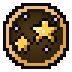 | Seconda stella a destra | Scendi 5 piani in una sola discesa. | sì |
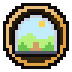 | Libera | Esci dal castello. | |
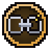 | Senza catene | Esci dal castello 5 volte. | |
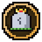 | Anche le principesse cadono | Muori per la prima volta. | |
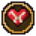 | Testarda | Muori 25 volte. | |
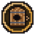 | Nessuna porta mi ferma | Ripulisci 5 stanze-arena in una sola discesa. | sì |
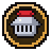 | Gladiatrice | Ripulisci 100 stanze-arena. | |
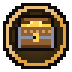 | Scrigni | Apri 25 forzieri. | |
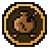 | Cocci | Rompi 50 vasi. | |
| Suona vuoto | Trova un passaggio segreto. | ||
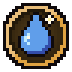 | Acqua benedetta | Bevi da 10 fontane. | |
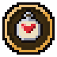 | Ricordi di casa | Compra un ricordo. | |
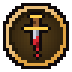 | Senza pietà | Uccidi il cavaliere prigioniero. | |
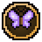 | Mutaforma | Prendi una forma del dardo. | |
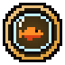 | In fondo al mar | Imprigiona un nemico in una bolla 25 volte. | |
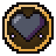 | Cuore di tenebra | Ricevi 5  in una sola discesa. in una sola discesa. | sì |
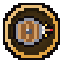 | Parata | Para 10 colpi con gli scudi. | |
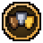 | Muro di scudi | Para 50 colpi con gli scudi. |
Spoiler: gli obiettivi segreti
| Obiettivo | Cosa fare | In una discesa | |
|---|---|---|---|
| Gusti perversi | Prendi un dono perverso. |